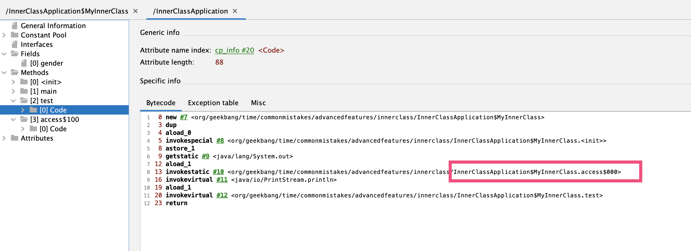
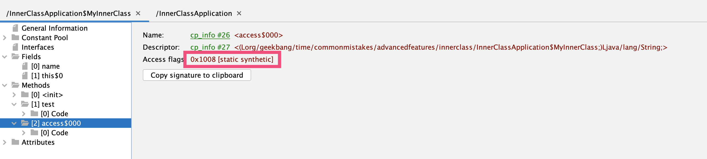
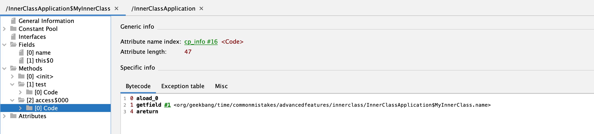
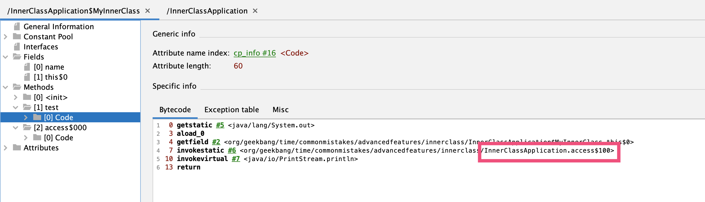

- 00 开篇词 业务代码真的会有这么多坑？.md.html
- 01 使用了并发工具类库，线程安全就高枕无忧了吗？.md.html
- 02 代码加锁：不要让“锁”事成为烦心事.md.html
- 03 线程池：业务代码最常用也最容易犯错的组件.md.html
- 04 连接池：别让连接池帮了倒忙.md.html
- 05 HTTP调用：你考虑到超时、重试、并发了吗？.md.html
- 06 2成的业务代码的Spring声明式事务，可能都没处理正确.md.html
- 07 数据库索引：索引并不是万能药.md.html
- 08 判等问题：程序里如何确定你就是你？.md.html
- 09 数值计算：注意精度、舍入和溢出问题.md.html
- 10 集合类：坑满地的List列表操作.md.html
- 11 空值处理：分不清楚的null和恼人的空指针.md.html
- 12 异常处理：别让自己在出问题的时候变为瞎子.md.html
- 13 日志：日志记录真没你想象的那么简单.md.html
- 14 文件IO：实现高效正确的文件读写并非易事.md.html
- 15 序列化：一来一回你还是原来的你吗？.md.html
- 16 用好Java 8的日期时间类，少踩一些“老三样”的坑.md.html
- 17 别以为“自动挡”就不可能出现OOM.md.html
- 18 当反射、注解和泛型遇到OOP时，会有哪些坑？.md.html
- 19 Spring框架：IoC和AOP是扩展的核心.md.html
- 20 Spring框架：框架帮我们做了很多工作也带来了复杂度.md.html
- 21 代码重复：搞定代码重复的三个绝招.md.html
- 22 接口设计：系统间对话的语言，一定要统一.md.html
- 23 缓存设计：缓存可以锦上添花也可以落井下石.md.html
- 24 业务代码写完，就意味着生产就绪了？.md.html
- 25 异步处理好用，但非常容易用错.md.html
- 26 数据存储：NoSQL与RDBMS如何取长补短、相辅相成？.md.html
- 27 数据源头：任何客户端的东西都不可信任.md.html
- 28 安全兜底：涉及钱时，必须考虑防刷、限量和防重.md.html
- 29 数据和代码：数据就是数据，代码就是代码.md.html
- 30 如何正确保存和传输敏感数据？.md.html
- 31 加餐1：带你吃透课程中Java 8的那些重要知识点（一）.md.html
- 32 加餐2：带你吃透课程中Java 8的那些重要知识点（二）.md.html
- 33 加餐3：定位应用问题，排错套路很重要.md.html
- 34 加餐4：分析定位Java问题，一定要用好这些工具（一）.md.html
- 35 加餐5：分析定位Java问题，一定要用好这些工具（二）.md.html
- 36 加餐6：这15年来，我是如何在工作中学习技术和英语的？.md.html
- 37 加餐7：程序员成长28计.md.html
- 38 加餐8：Java程序从虚拟机迁移到Kubernetes的一些坑.md.html
- 答疑篇：代码篇思考题集锦（一）.md.html
- 答疑篇：代码篇思考题集锦（三）.md.html
- 答疑篇：代码篇思考题集锦（二）.md.html
- 答疑篇：加餐篇思考题答案合集.md.html
- 答疑篇：安全篇思考题答案合集.md.html
- 答疑篇：设计篇思考题答案合集.md.html
- 结束语 写代码时，如何才能尽量避免踩坑？.md.html
答疑篇：代码篇思考题集锦（三）
你好，我是朱晔。
今天，我们继续一起分析这门课第 13~20 讲的课后思考题。这些题目涉及了日志、文件 IO、序列化、Java 8 日期时间类、OOM、Java 高级特性（反射、注解和泛型）和 Spring 框架的 16 道问题。
接下来，我们就一一具体分析吧。
13 | 日志：日志记录真没你想象的那么简单
问题 1：在讲“为什么我的日志会重复记录？”的案例时，我们把 INFO 级别的日志存放到 _info.log 中，把 WARN 和 ERROR 级别的日志存放到 _error.log 中。如果现在要把 INFO 和 WARN 级别的日志存放到 _info.log 中，把 ERROR 日志存放到 _error.log 中，应该如何配置 Logback 呢？
答：要实现这个配置有两种方式，分别是：直接使用 EvaluatorFilter 和自定义一个 Filter。我们分别看一下。
第一种方式是，直接使用 logback 自带的 EvaluatorFilter：
<filter class="ch.qos.logback.core.filter.EvaluatorFilter">
<evaluator class="ch.qos.logback.classic.boolex.GEventEvaluator">
<expression>
e.level.toInt() == WARN.toInt() || e.level.toInt() == INFO.toInt()
</expression>
</evaluator>
<OnMismatch>DENY</OnMismatch>
<OnMatch>NEUTRAL</OnMatch>
</filter>
第二种方式是，自定义一个 Filter，实现解析配置中的“|”字符分割的多个 Level：
public class MultipleLevelsFilter extends Filter<ILoggingEvent> {
@Getter
@Setter
private String levels;
private List<Integer> levelList;
@Override
public FilterReply decide(ILoggingEvent event) {
if (levelList == null && !StringUtils.isEmpty(levels)) {
//把由|分割的多个Level转换为List<Integer>
levelList = Arrays.asList(levels.split("\\|")).stream()
.map(item -> Level.valueOf(item))
.map(level -> level.toInt())
.collect(Collectors.toList());
}
//如果levelList包含当前日志的级别，则接收否则拒绝
if (levelList.contains(event.getLevel().toInt()))
return FilterReply.ACCEPT;
else
return FilterReply.DENY;
}
}
然后，在配置文件中使用这个 MultipleLevelsFilter 就可以了（完整的配置代码参考这里）：
<filter class="org.geekbang.time.commonmistakes.logging.duplicate.MultipleLevelsFilter">
<levels>INFO|WARN</levels>
</filter>
问题 2：生产级项目的文件日志肯定需要按时间和日期进行分割和归档处理，以避免单个文件太大，同时保留一定天数的历史日志，你知道如何配置吗？可以在官方文档找到答案。
答：参考配置如下，使用 SizeAndTimeBasedRollingPolicy 来实现按照文件大小和历史文件保留天数，进行文件分割和归档：
<rollingPolicy class="ch.qos.logback.core.rolling.SizeAndTimeBasedRollingPolicy">
<!--日志文件保留天数-->
<MaxHistory>30</MaxHistory>
<!--日志文件最大的大小-->
<MaxFileSize>100MB</MaxFileSize>
<!--日志整体最大
可选的totalSizeCap属性控制所有归档文件的总大小。当超过总大小上限时，将异步删除最旧的存档。
totalSizeCap属性也需要设置maxHistory属性。此外，“最大历史”限制总是首先应用，“总大小上限”限制其次应用。
-->
<totalSizeCap>10GB</totalSizeCap>
</rollingPolicy>
14 | 文件 IO：实现高效正确的文件读写并非易事
问题 1：Files.lines 方法进行流式处理，需要使用 try-with-resources 进行资源释放。那么，使用 Files 类中其他返回 Stream 包装对象的方法进行流式处理，比如 newDirectoryStream 方法返回 DirectoryStream，list、walk 和 find 方法返回 Stream，也同样有资源释放问题吗？
答：使用 Files 类中其他返回 Stream 包装对象的方法进行流式处理，也同样会有资源释放问题。
因为，这些接口都需要使用 try-with-resources 模式来释放。正如文中所说，如果不显式释放，那么可能因为底层资源没有及时关闭造成资源泄露。
问题 2：Java 的 File 类和 Files 类提供的文件复制、重命名、删除等操作，是原子性的吗？
答：Java 的 File 和 Files 类的文件复制、重命名、删除等操作，都不是原子性的。原因是，文件类操作基本都是调用操作系统本身的 API，一般来说这些文件 API 并不像数据库有事务机制（也很难办到），即使有也很可能有平台差异性。
比如，File.renameTo 方法的文档中提到：
Many aspects of the behavior of this method are inherently platform-dependent: The rename operation might not be able to move a file from one filesystem to another, it might not be atomic, and it might not succeed if a file with the destination abstract pathname already exists. The return value should always be checked to make sure that the rename operation was successful.
又比如，Files.copy 方法的文档中提到：
Copying a file is not an atomic operation. If an IOException is thrown, then it is possible that the target file is incomplete or some of its file attributes have not been copied from the source file. When the REPLACE_EXISTING option is specified and the target file exists, then the target file is replaced. The check for the existence of the file and the creation of the new file may not be atomic with respect to other file system activities.
15 | 序列化：一来一回你还是原来的你吗？
问题 1：在讨论 Redis 序列化方式的时候，我们自定义了 RedisTemplate，让 Key 使用 String 序列化、让 Value 使用 JSON 序列化，从而使 Redis 获得的 Value 可以直接转换为需要的对象类型。那么，使用 RedisTemplate<String, Long> 能否存取 Value 是 Long 的数据呢？这其中有什么坑吗？
答：使用 RedisTemplate<String, Long>，不一定能存取 Value 是 Long 的数据。在 Integer 区间内返回的是 Integer，超过这个区间返回 Long。测试代码如下：
@GetMapping("wrong2")
public void wrong2() {
String key = "testCounter";
//测试一下设置在Integer范围内的值
countRedisTemplate.opsForValue().set(key, 1L);
log.info("{} {}", countRedisTemplate.opsForValue().get(key), countRedisTemplate.opsForValue().get(key) instanceof Long);
Long l1 = getLongFromRedis(key);
//测试一下设置超过Integer范围的值
countRedisTemplate.opsForValue().set(key, Integer.MAX_VALUE + 1L);
log.info("{} {}", countRedisTemplate.opsForValue().get(key), countRedisTemplate.opsForValue().get(key) instanceof Long);
//使用getLongFromRedis转换后的值必定是Long
Long l2 = getLongFromRedis(key);
log.info("{} {}", l1, l2);
}
private Long getLongFromRedis(String key) {
Object o = countRedisTemplate.opsForValue().get(key);
if (o instanceof Integer) {
return ((Integer) o).longValue();
}
if (o instanceof Long) {
return (Long) o;
}
return null;
}
会得到如下输出：
1 false
2147483648 true
1 2147483648
可以看到，值设置 1 的时候类型不是 Long，设置 2147483648 的时候是 Long。也就是使用 RedisTemplate<String, Long> 不一定就代表获取的到的 Value 是 Long。
所以，这边我写了一个 getLongFromRedis 方法来做转换避免出错，判断当值是 Integer 的时候转换为 Long。
问题 2：你可以看一下 Jackson2ObjectMapperBuilder 类源码的实现（注意 configure 方法），分析一下其除了关闭 FAIL_ON_UNKNOWN_PROPERTIES 外，还做了什么吗？
答：除了关闭 FAIL_ON_UNKNOWN_PROPERTIES 外，Jackson2ObjectMapperBuilder 类源码还主要做了以下两方面的事儿。
第一，设置 Jackson 的一些默认值，比如：
MapperFeature.DEFAULT_VIEW_INCLUSION 设置为禁用；
DeserializationFeature.FAIL_ON_UNKNOWN_PROPERTIES 设置为禁用。
第二，自动注册 classpath 中存在的一些 jackson 模块，比如：
jackson-datatype-jdk8，支持 JDK8 的一些类型，比如 Optional；
jackson-datatype-jsr310， 支持 JDK8 的日期时间一些类型。
jackson-datatype-joda，支持 Joda-Time 类型。
jackson-module-kotlin，支持 Kotlin。
16 | 用好 Java 8 的日期时间类，少踩一些“老三样”的坑
问题 1：在这一讲中，我多次强调了 Date 是一个时间戳，是 UTC 时间、没有时区概念。那，为什么调用其 toString 方法，会输出类似 CST 之类的时区字样呢？
答：关于这个问题，参考 toString 中的相关源码，你可以看到会获取当前时区（取不到则显示 GMT）进行格式化：
public String toString() {
BaseCalendar.Date date = normalize();
...
TimeZone zi = date.getZone();
if (zi != null) {
sb.append(zi.getDisplayName(date.isDaylightTime(), TimeZone.SHORT, Locale.US)); // zzz
} else {
sb.append("GMT");
}
sb.append(' ').append(date.getYear()); // yyyy
return sb.toString();
}
private final BaseCalendar.Date normalize() {
if (cdate == null) {
BaseCalendar cal = getCalendarSystem(fastTime);
cdate = (BaseCalendar.Date) cal.getCalendarDate(fastTime,
TimeZone.getDefaultRef());
return cdate;
}
// Normalize cdate with the TimeZone in cdate first. This is
// required for the compatible behavior.
if (!cdate.isNormalized()) {
cdate = normalize(cdate);
}
// If the default TimeZone has changed, then recalculate the
// fields with the new TimeZone.
TimeZone tz = TimeZone.getDefaultRef();
if (tz != cdate.getZone()) {
cdate.setZone(tz);
CalendarSystem cal = getCalendarSystem(cdate);
cal.getCalendarDate(fastTime, cdate);
}
return cdate;
}
其实说白了，这里显示的时区仅仅用于呈现，并不代表 Date 类内置了时区信息。
问题 2：日期时间数据始终要保存到数据库中，MySQL 中有两种数据类型 datetime 和 timestamp 可以用来保存日期时间。你能说说它们的区别吗，它们是否包含时区信息呢？
答：datetime 和 timestamp 的区别，主要体现在占用空间、表示的时间范围和时区三个方面。
占用空间：datetime 占用 8 字节；timestamp 占用 4 字节。
表示的时间范围：datetime 表示的范围是从“1000-01-01 00:00:00.000000”到“9999-12-31 23:59:59.999999”；timestamp 表示的范围是从“1970-01-01 00:00:01.000000”到“2038-01-19 03:14:07.999999”。
时区：timestamp 保存的时候根据当前时区转换为 UTC，查询的时候再根据当前时区从 UTC 转回来；而 datetime 就是一个死的字符串时间（仅仅对 MySQL 本身而言）表示。
需要注意的是，我们说 datetime 不包含时区是固定的时间表示，仅仅是指 MySQL 本身。使用 timestamp，需要考虑 Java 进程的时区和 MySQL 连接的时区。而使用 datetime 类型，则只需要考虑 Java 进程的时区（因为 MySQL datetime 没有时区信息了，JDBC 时间戳转换成 MySQL datetime，会根据 MySQL 的 serverTimezone 做一次转换）。
如果你的项目有国际化需求，我推荐使用时间戳，并且要确保你的应用服务器和数据库服务器设置了正确的匹配当地时区的时区配置。
其实，即便你的项目没有国际化需求，至少是应用服务器和数据库服务器设置一致的时区，也是需要的。
17 | 别以为“自动挡”就不可能出现 OOM
问题 1：Spring 的 ConcurrentReferenceHashMap，针对 Key 和 Value 支持软引用和弱引用两种方式。你觉得哪种方式更适合做缓存呢？
答：软引用和弱引用的区别在于：若一个对象是弱引用可达，无论当前内存是否充足它都会被回收，而软引用可达的对象在内存不充足时才会被回收。因此，软引用要比弱引用“强”一些。
那么，使用弱引用作为缓存就会让缓存的生命周期过短，所以软引用更适合作为缓存。
问题 2：当我们需要动态执行一些表达式时，可以使用 Groovy 动态语言实现：new 出一个 GroovyShell 类，然后调用 evaluate 方法动态执行脚本。这种方式的问题是，会重复产生大量的类，增加 Metaspace 区的 GC 负担，有可能会引起 OOM。你知道如何避免这个问题吗？
答：调用 evaluate 方法动态执行脚本会产生大量的类，要避免可能因此导致的 OOM 问题，我们可以把脚本包装为一个函数，先调用 parse 函数来得到 Script 对象，然后缓存起来，以后直接使用 invokeMethod 方法调用这个函数即可：
private Object rightGroovy(String script, String method, Object... args) {
Script scriptObject;
if (SCRIPT_CACHE.containsKey(script)) {
//如果脚本已经生成过Script则直接使用
scriptObject = SCRIPT_CACHE.get(script);
} else {
//否则把脚本解析为Script
scriptObject = shell.parse(script);
SCRIPT_CACHE.put(script, scriptObject);
}
return scriptObject.invokeMethod(method, args);
}
我在源码中提供了一个测试程序，你可以直接去看一下。
18 | 当反射、注解和泛型遇到 OOP 时，会有哪些坑？
问题 1：泛型类型擦除后会生成一个 bridge 方法，这个方法同时又是 synthetic 方法。除了泛型类型擦除，你知道还有什么情况编译器会生成 synthetic 方法吗？
答：Synthetic 方法是编译器自动生成的方法（在源码中不出现）。除了文中提到的泛型类型擦除外，Synthetic 方法还可能出现的一个比较常见的场景，是内部类和顶层类需要相互访问对方的 private 字段或方法的时候。
编译后的内部类和普通类没有区别，遵循 private 字段或方法对外部类不可见的原则，但语法上内部类和顶层类的私有字段需要可以相互访问。为了解决这个矛盾，编译器就只能生成桥接方法，也就是 Synthetic 方法，来把 private 成员转换为 package 级别的访问限制。
比如如下代码，InnerClassApplication 类的 test 方法需要访问内部类 MyInnerClass 类的私有字段 name，而内部类 MyInnerClass 类的 test 方法需要访问外部类 InnerClassApplication 类的私有字段 gender。
public class InnerClassApplication {
private String gender = "male";
public static void main(String[] args) throws Exception {
InnerClassApplication application = new InnerClassApplication();
application.test();
}
private void test(){
MyInnerClass myInnerClass = new MyInnerClass();
System.out.println(myInnerClass.name);
myInnerClass.test();
}
class MyInnerClass {
private String name = "zhuye";
void test(){
System.out.println(gender);
}
}
}
编译器会为 InnerClassApplication 和 MyInnerClass 都生成桥接方法。
如下图所示，InnerClassApplication 的 test 方法，其实调用的是内部类的 access$000 静态方法：

这个 access$000 方法是 Synthetic 方法：

而 Synthetic 方法的实现转接调用了内部类的 name 字段：

反过来，内部类的 test 方法也是通过外部类 InnerClassApplication 类的桥接方法 access$100 调用到其私有字段：

问题 2：关于注解继承问题，你觉得 Spring 的常用注解 @Service、@Controller 是否支持继承呢？
答：Spring 的常用注解 @Service、@Controller，不支持继承。这些注解只支持放到具体的（非接口非抽象）顶层类上（来让它们成为 Bean），如果支持继承会非常不灵活而且容易出错。
19 | Spring 框架：IoC 和 AOP 是扩展的核心
问题 1：除了通过 @Autowired 注入 Bean 外，还可以使用 @Inject 或 @Resource 来注入 Bean。你知道这三种方式的区别是什么吗？
答：我们先说一下使用 @Autowired、@Inject 和 @Resource 这三种注解注入 Bean 的方式：
@Autowired，是 Spring 的注解，优先按照类型注入。当无法确定具体注入类型的时候，可以通过 @Qualifier 注解指定 Bean 名称。
@Inject：是 JSR330 规范的实现，也是根据类型进行自动装配的，这一点和 @Autowired 类似。如果需要按名称进行装配，则需要配合使用 @Named。@Autowired 和 @Inject 的区别在于，前者可以使用 required=false 允许注入 null，后者允许注入一个 Provider 实现延迟注入。
@Resource：JSR250 规范的实现，如果不指定 name 优先根据名称进行匹配（然后才是类型），如果指定 name 则仅根据名称匹配。
问题 2：当 Bean 产生循环依赖时，比如 BeanA 的构造方法依赖 BeanB 作为成员需要注入，BeanB 也依赖 BeanA，你觉得会出现什么问题呢？又有哪些解决方式呢？
答：Bean 产生循环依赖，主要包括两种情况：一种是注入属性或字段涉及循环依赖，另一种是构造方法注入涉及循环依赖。接下来，我分别和你讲一讲。
第一种，注入属性或字段涉及循环依赖，比如 TestA 和 TestB 相互依赖：
@Component
public class TestA {
@Autowired
@Getter
private TestB testB;
}
@Component
public class TestB {
@Autowired
@Getter
private TestA testA;
}
针对这个问题，Spring 内部通过三个 Map 的方式解决了这个问题，不会出错。基本原理是，因为循环依赖，所以实例的初始化无法一次到位，需要分步进行：
创建 A（仅仅实例化，不注入依赖）；
创建 B（仅仅实例化，不注入依赖）；
为 B 注入 A（此时 B 已健全）；
为 A 注入 B（此时 A 也健全）。
网上有很多相关的分析，我找了一篇比较详细的，可供你参考。
第二种，构造方法注入涉及循环依赖。遇到这种情况的话，程序无法启动，比如 TestC 和 TestD 的相互依赖：
@Component
public class TestC {
@Getter
private TestD testD;
@Autowired
public TestC(TestD testD) {
this.testD = testD;
}
}
@Component
public class TestD {
@Getter
private TestC testC;
@Autowired
public TestD(TestC testC) {
this.testC = testC;
}
}
这种循环依赖的主要解决方式，有 2 种：
改为属性或字段注入；
使用 @Lazy 延迟注入。比如如下代码：
@Component
public class TestC {
@Getter
private TestD testD;
@Autowired
public TestC(@Lazy TestD testD) {
this.testD = testD;
}
}
其实，这种 @Lazy 方式注入的就不是实际的类型了，而是代理类，获取的时候通过代理去拿值（实例化）。所以，它可以解决循环依赖无法实例化的问题。
20 | Spring 框架：框架帮我们做了很多工作也带来了复杂度
问题 1：除了 Spring 框架这两讲涉及的 execution、within、@within、@annotation 四个指示器外，Spring AOP 还支持 this、target、args、@target、@args。你能说说后面五种指示器的作用吗？
答：关于这些指示器的作用，你可以参考官方文档，文档里已经写的很清晰。
总结一下，按照使用场景，建议使用下面这些指示器：
针对方法签名，使用 execution；
针对类型匹配，使用 within（匹配类型）、this（匹配代理类实例）、target（匹配代理背后的目标类实例）、args（匹配参数）；
针对注解匹配，使用 @annotation（使用指定注解标注的方法）、@target（使用指定注解标注的类）、@args（使用指定注解标注的类作为某个方法的参数）。
你可能会问，@within 怎么没有呢？
其实，对于 Spring 默认的基于动态代理或 CGLIB 的 AOP，因为切点只能是方法，使用 @within 和 @target 指示器并无区别；但需要注意如果切换到 AspectJ，那么使用 @within 和 @target 这两个指示器的行为就会有所区别了，@within 会切入更多的成员的访问（比如静态构造方法、字段访问），一般而言使用 @target 指示器即可。
问题 2：Spring 的 Environment 中的 PropertySources 属性可以包含多个 PropertySource，越往前优先级越高。那，我们能否利用这个特点实现配置文件中属性值的自动赋值呢？比如，我们可以定义 %%MYSQL.URL%%、%%MYSQL.USERNAME%% 和 %%MYSQL.PASSWORD%%，分别代表数据库连接字符串、用户名和密码。在配置数据源时，我们只要设置其值为占位符，框架就可以自动根据当前应用程序名 application.name，统一把占位符替换为真实的数据库信息。这样，生产的数据库信息就不需要放在配置文件中了，会更安全。
答：我们利用 PropertySource 具有优先级的特点，实现配置文件中属性值的自动赋值。主要逻辑是，遍历现在的属性值，找出能匹配到占位符的属性，并把这些属性的值替换为实际的数据库信息，然后再把这些替换后的属性值构成新的 PropertiesPropertySource，加入 PropertySources 的第一个。这样，我们这个 PropertiesPropertySource 中的值就可以生效了。
主要源码如下：
public static void main(String[] args) {
Utils.loadPropertySource(CommonMistakesApplication.class, "db.properties");
new SpringApplicationBuilder()
.sources(CommonMistakesApplication.class)
.initializers(context -> initDbUrl(context.getEnvironment()))
.run(args);
}
private static final String MYSQL_URL_PLACEHOLDER = "%%MYSQL.URL%%";
private static final String MYSQL_USERNAME_PLACEHOLDER = "%%MYSQL.USERNAME%%";
private static final String MYSQL_PASSWORD_PLACEHOLDER = "%%MYSQL.PASSWORD%%";
private static void initDbUrl(ConfigurableEnvironment env) {
String dataSourceUrl = env.getProperty("spring.datasource.url");
String username = env.getProperty("spring.datasource.username");
String password = env.getProperty("spring.datasource.password");
if (dataSourceUrl != null && !dataSourceUrl.contains(MYSQL_URL_PLACEHOLDER))
throw new IllegalArgumentException("请使用占位符" + MYSQL_URL_PLACEHOLDER + "来替换数据库URL配置！");
if (username != null && !username.contains(MYSQL_USERNAME_PLACEHOLDER))
throw new IllegalArgumentException("请使用占位符" + MYSQL_USERNAME_PLACEHOLDER + "来替换数据库账号配置！");
if (password != null && !password.contains(MYSQL_PASSWORD_PLACEHOLDER))
throw new IllegalArgumentException("请使用占位符" + MYSQL_PASSWORD_PLACEHOLDER + "来替换数据库密码配置！");
//这里我把值写死了，实际应用中可以从外部服务来获取
Map<String, String> property = new HashMap<>();
property.put(MYSQL_URL_PLACEHOLDER, "jdbc:mysql://localhost:6657/common_mistakes?characterEncoding=UTF-8&useSSL=false");
property.put(MYSQL_USERNAME_PLACEHOLDER, "root");
property.put(MYSQL_PASSWORD_PLACEHOLDER, "kIo9u7Oi0eg");
//保存修改后的配置属性
Properties modifiedProps = new Properties();
//遍历现在的属性值，找出能匹配到占位符的属性，并把这些属性的值替换为实际的数据库信息
StreamSupport.stream(env.getPropertySources().spliterator(), false)
.filter(ps -> ps instanceof EnumerablePropertySource)
.map(ps -> ((EnumerablePropertySource) ps).getPropertyNames())
.flatMap(Arrays::stream)
.forEach(propKey -> {
String propValue = env.getProperty(propKey);
property.entrySet().forEach(item -> {
//如果原先配置的属性值包含我们定义的占位符
if (propValue.contains(item.getKey())) {
//那么就把实际的配置信息加入modifiedProps
modifiedProps.put(propKey, propValue.replaceAll(item.getKey(), item.getValue()));
}
});
});
if (!modifiedProps.isEmpty()) {
log.info("modifiedProps: {}", modifiedProps);
env.getPropertySources().addFirst(new PropertiesPropertySource("mysql", modifiedProps));
}
}
我在 GitHub 上第 20 讲对应的源码中更新了我的实现，你可以点击这里查看。有一些同学会问，这么做的意义到底在于什么，为何不直接使用类似 Apollo 这样的配置框架呢？
其实，我们的目的就是不希望让开发人员手动配置数据库信息，希望程序启动的时候自动替换占位符实现自动配置（从 CMDB 直接拿着应用程序 ID 来换取对应的数据库信息。你可能会问了，一个应用程序 ID 对应多个数据库怎么办？其实，一般对于微服务系统来说，一个应用就应该对应一个数据库）。这样一来，除了程序其他人都不会接触到生产的数据库信息，会更安全。
以上，就是咱们这门课的第 13~20 讲的思考题答案了。
关于这些题目，以及背后涉及的知识点，如果你还有哪里感觉不清楚的，欢迎在评论区与我留言，也欢迎你把今天的内容分享给你的朋友或同事，一起交流。